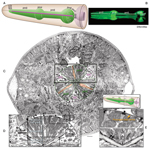
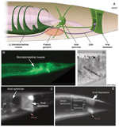
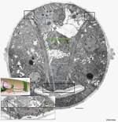
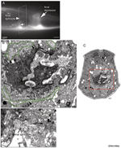
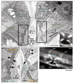
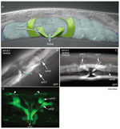
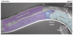
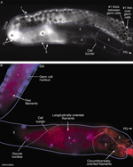
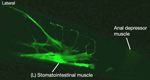

Handbook - Hermaphrodite
Muscle System Nonstriated Muscle see also Introduction Somatic Muscle GLR Cells Head Mesodermal Cell
3 Stomatointestinal muscles
Figures  MusFIG 17 - Pharyngeal muscles have single sarcomeres  MusFIG 18 - Stomatointestinal muscles and anal depressor muscle  MusFIG 19 - Ultrastructure of the anal depressor muscle  MusFIG 20 - Anal sphincter muscle  MusFIG 21 - Vulval and uterine muscles  MusFIG 22 - Uterine muscles of the hermaphrodite  MusFIG 23 - Somatic gonad, lateral view  MusFIG 24 - Distal and proximal gonadal sheath cells have different characteristics  MusMOVIE 3 - 3-D reconstruction of (L) stomatointestinal muscle cell